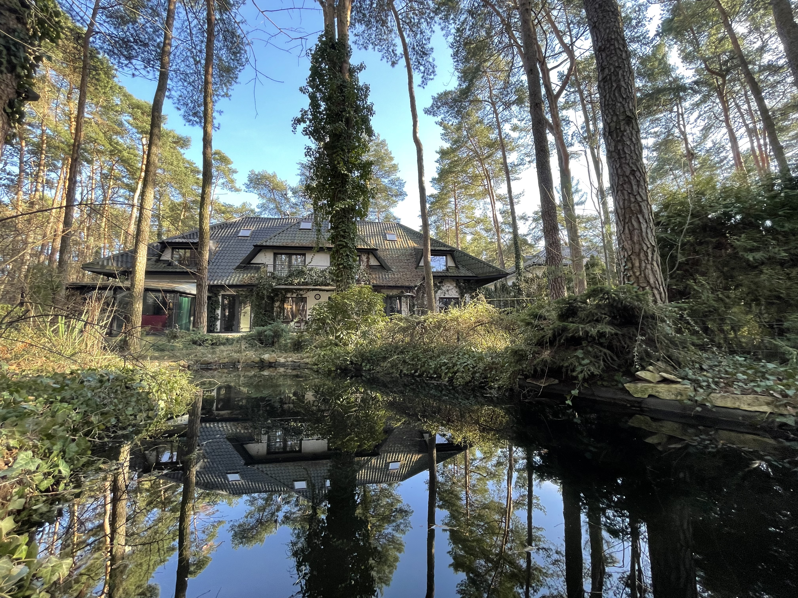
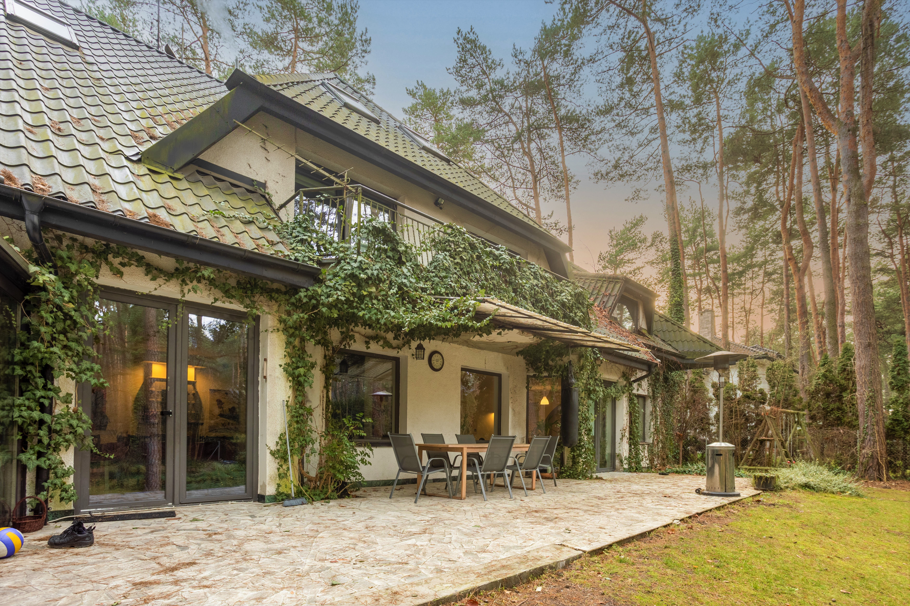
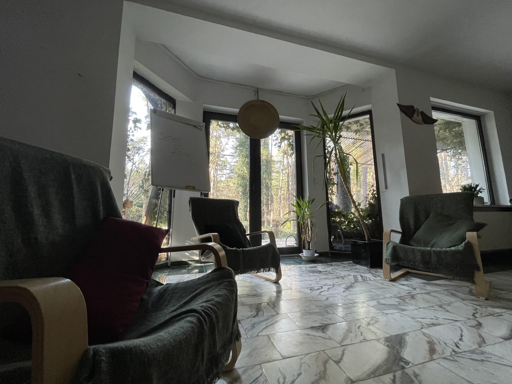

Prywatny ośrodek leczenia uzależnień · Magdalenka
Jesteś tu, bo coś ma się zmienić.
Detoks i terapia w domu wśród sosen, 20 minut od Warszawy. Bez rozgłosu, bez pośpiechu, bez oceniania. Możesz zacząć od jednej rozmowy — i na niej poprzestać, jeśli tyle dziś wystarczy.
To o mnie
Chcę przestać, ale nie wiem, od czego zacząć i co się ze mną stanie po przyjeździe.
Zobacz, co dzieje się po telefonie →Chodzi o kogoś bliskiego
Boję się o kogoś i nie wiem, jak rozmawiać, żeby nie zamknąć drzwi na dobre.
Jak rozmawiać, jak pomóc →albo po prostu zadzwoń — +48 000 000 000, całą dobę, poufnie
Pierwszy krok
Co się stanie, kiedy zadzwonisz
{{ step.title }}
{{ step.body }}


Miejsce
Dom w sosnowym lesie, nie oddział szpitalny
Magdalenka to zielona okolica na południe od Warszawy. Mieszkamy w jednym domu: pokoje z widokiem na drzewa, wspólny salon, taras i ogród, w którym można po prostu posiedzieć w ciszy. Wszystkie zdjęcia poniżej są z naszego ośrodka.



Głosy pacjentów
„Bałam się, że będzie jak w szpitalu. Nie było. Po dwóch dniach tata sam wyszedł na spacer i powiedział, że zostaje."
„Nikt mnie nie oceniał ani jednego dnia. To był pierwszy raz, kiedy powiedziałem wszystko na głos."
Opinie publikujemy anonimowo i wyłącznie za pisemną zgodą autorów.
Pytania, które słyszymy najczęściej
Zapytaj o to, co Cię blokuje
{{ item.a }}
Wolisz, żebyśmy oddzwonili?
Zostaw numer i godzinę, o której możemy dzwonić. Oddzwaniamy w ciągu 15 minut w godzinach dyżuru.
Numer widzi wyłącznie terapeuta dyżurny. Nie trafia do żadnej bazy marketingowej, nie wysyłamy SMS-ów ani ofert. Jeśli poprosisz, dzwonimy z numeru zastrzeżonego.
Mamy Twój numer. Oddzwonimy.
Zadzwonimy z numeru zastrzeżonego, jeśli o to prosiłeś. Jeśli w tym czasie zmienisz zdanie — nic się nie stanie, wystarczy nie odebrać.
Nie chcesz czekać: +48 000 000 000
Jak do nas trafić
Magdalenka, 20 minut od Warszawy
Adres: ul. — , 05-552 Magdalenka (dokładny adres podajemy przy potwierdzeniu terminu)
Samochodem: od Puławskiej ok. 15 min, miejsce na parkingu przed domem
Bez samochodu: odbieramy z dworca lub lotniska — wystarczy powiedzieć przy rozmowie
(osadzimy mapę, gdy potwierdzisz adres)